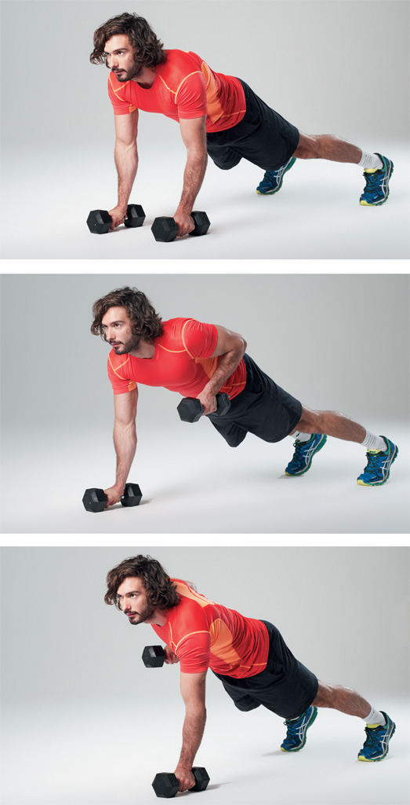
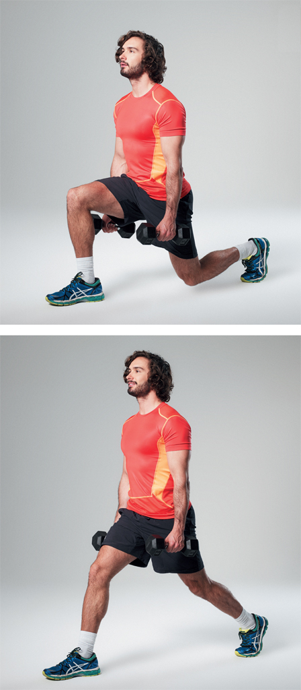

Cooling down is really important for your muscles and joints. Have a slow walk or cycle to let your heart rate return to normal. Static stretching or foam rolling can really help reduce your muscle soreness. You may find you experience DOMS (Delayed Onset Muscle Soreness) after your first few sessions. This is totally normal and lasts between 24 and 72 hours. Don’t worry, it will pass. It’s just your body’s way of letting you know you’ve worked hard, and it will reward you by growing stronger and leaner.
When do I do it?
HIIT cardio is effective at any time of day, so I always recommend doing it when you have the most energy. This could be in the morning before work or late in the evening. Remember, this is your time to ‘earn’ your post-workout carbs.
How often do I do it?
You should aim to do HIIT 4 or 5 days a week for maximum results. If you can’t manage that many workouts each week, that’s fine – just do what you can and keep a good routine. Remember, though, that on rest days you will be consuming 3 meals from the reduced-carbohydrate menu, so if you want to enjoy your carbs, then you are going to need to find time to smash out a quick HIIT.
Good luck with your workouts. Remember to push yourself and aim to progress each week: this could mean going 0.5km/h faster each week on the treadmill or increasing the weight of your dumbbells by 1kg each week. With progression comes strength, and a strong lean body is exactly what you will earn. Be patient and be consistent. Rome wasn’t built in a day.
This full-body workout is going to take a bit longer than the HIIT cardio one, as it’s going to focus not only on elevating your heart rate, but also on increasing lean muscle with resistance training. By increasing your lean muscle mass, you will increase your metabolic rate, which means you will burn even more fat and can enjoy more food as you get leaner.
All you will need for this is a set of dumbbells for added resistance and an exercise mat. If you are a beginner, start with light weights and aim to increase them as you get stronger. You are going to do the following exercises in a circuit and perform as many reps as possible in 30 seconds. You will then rest for 45 seconds between each exercise. As you get fitter and stronger, you can reduce the rest time to 30 seconds or increase the total number of rounds of 5 full circuits.
1. Press-ups with dumbbell row
2. Dumbbell squats
3. Shoulder presses
4. Dumbbell lunges
5. Bicep curls
1. 30 seconds Press-ups with dumbbell row
(You can do these on your knees if you prefer.)
45 seconds rest

2. 30 seconds Dumbbell squats
45 seconds rest
3. 30 seconds Shoulder presses
45 seconds rest
4. 30 seconds Dumbbell lunges
45 seconds rest

5. 30 seconds Bicep curls
45 seconds rest
Repeat this circuit 3–5 times depending on your fitness level (approximately 30 minutes).